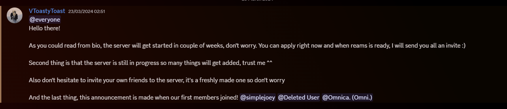
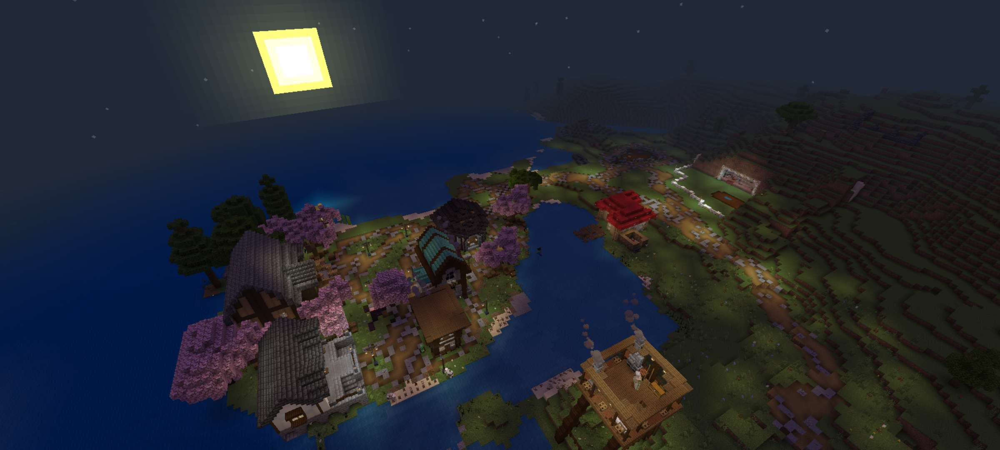

Owner of the Character: SamuraiBread
Role on the server: 👑| Owner

Ireatnifis is one of the two first gods in the EndfallenSMP universe. He was betrayed by his brother, Nihiletomnis—the First God—who attempted to merge with him again after their ancient separation, seeking to reclaim his lost power. Ireatnifis prevailed, but at the cost of his brother’s life. Since then, he has despised everything connected to the First God, seeking to erase all remnants and rebuild the world from nothing. What happens to the souls of those he "erases"? Some say those turned to stone become his eternal puppets.

Owner of the Character: FoxThorn
Role on the server: ♟️| Head Admin

Sin is a 50-year-old Avian born of low heritage, long cast out by her own people. Orphaned by war, neglected as a child, and later exiled for becoming a mother too young, she lost her only son after being rejected by every race she turned to for help. When her son died in her arms, her rage awakened. She struck back at her people before vanishing across the sea. But her story didn’t end there. An ignorant king once broke into her home, leaving behind a letter that would change her fate. She met Lily—a mysterious figure who promised to bring her son back. The boy returned, but something felt wrong. He grew up unnaturally fast. Eventually, Sin learned the truth: her son had become a vessel for the Founder. The Founder, who had once killed her, now used her son to do it again. After that second death, Sin was dragged to the Nether and tortured for eight relentless years. She survived. But what remained was not the same woman the world once exiled.

Owner of the Character: SillySpider
Role on the server: ???
Raised by an elven man, she learned the ways of solitude, independence, and silence. Her vision had always been poor—she wore glasses more out of habit than help, yet she never complained. One evening, as they sat together at the edge of a cliff, the elf spoke of a woman from long ago. A curious human who once asked simple questions that stirred ancient thoughts. That night, something changed. Her memory fractured. When she awoke, her hands were stained with blood—fresh, warm, and hers... yet not. Her sight faded, her eyes became unbearable to look at, and so she hid them behind a blindfold. The curse revealed itself slowly: blood eternally clung to her hands, unable to be washed, wiped, or transferred. No food spoiled, no cloth stained—only her hands remained marked. Whether it was punishment, vengeance, or sorrow given form, she does not know. All she remembers is the echo of a dying question: "Do elves ever wonder how time leaves them behind?" And now she walks alone, haunted not by what she’s lost—but by what she may have done.

Owner of the Character: SirJeffington6
Role on the server: 🛡️| Admin

He awoke on a forgotten shore, soaked in salt and silence, with only the crashing of waves and a vague sense of déjà vu for company. Something about him felt... broken, as though fragments of a former life drifted just out of reach. The ocean whispered to him—of oaths made, a heartbeat shared, of wings now lost and memories buried beneath time. He moved with unnatural lightness, instinct guiding feet that had walked paths he couldn’t recall. Voices haunted him—one in particular, a woman’s, echoing deep within his mind. And yet, he pressed forward. Danvar, the man who once bore wings, now wore a coat lined with gold and determination. He believed in sharing power, not wealth. He believed in unity, not indulgence. When he seized the crown of the Poburg Empire, he wasted no time. "This empire is scattered," he proclaimed. "To survive, we must be reborn at sea." And so he laid the foundation for a new colony—a floating haven for all who needed shelter. But the burden grew. El Diabolo twisted in his thoughts, and Danvar saw truths he wasn’t ready to accept. The old man… was him. Or could be. And Lily—Lily stirred feelings he did not understand. He pushed her away, told her to leave, yet felt pain from her absence. He clung to small joys—like cooking—just to feel something normal again. In the eyes of his people, he was a king reborn. In his own, he was a soul adrift, searching for what had been forgotten.
Owner of the Character: Lilly
Role on the server: 👑| Co-Owner

Lily is an elven girl who appeared in the realm with no clear origin. Haunted by fragmented memories and a lingering sense that this world is not her true home, she struggles with questions that have no answers. Brought back to life through manipulation of time, Lily exists in a state between past and present—alive, but not whole. Names escape her, faces blur, and each attempt to remember triggers a deep fear she cannot explain. Despite the uncertainty, she settles in an elven village beneath a great cherry tree, trying to rebuild a sense of self. A loyal black cat named Spooks accompanies her—her only constant. As her paranoia grows and nightmares take hold, she throws herself into obsessive research, searching for truth among fragments of memory, whispers in the dark, and a creeping dread that something—or someone—is watching her. Lily’s story is one of survival, mystery, and the desperate pursuit of identity in a world she no longer understands.

Owner of the Character: Draco
Role on the server: ✅| Verified Member

Draco Thorn was once a gentle avian florist, but tragedy twisted him into something monstrous. Marked by blood-red wings, sunken eyes, and a disfigured smile, he became a cannibal after murdering his own father in a fit of hunger and rage. Fleeing to a distant land, he was crowned king—only to slaughter the very nation that accepted him. His reign ended in death at the hands of the Founder, but his soul lived on, forced to share a body with an unaware, kind old man. Eventually, Draco deceived his way into a new body—the form of a lost child belonging to an ally—concealing his identity even from those closest to him. But when the Founder discovered the truth, Draco was given an impossible choice: surrender himself or lose the only thing he still cared about. In a rare act of sacrifice, he chose submission, becoming the vessel for the very being who had destroyed him once before. Now, with his fate uncertain, only his friends hold the hope of saving him from the parasite within.
Owner of the Character: Casper
Role on the server: ⚒️| Moderator

Flynn is a young avian with large, slightly ruffled wings, just beginning his journey away from his homeland. Curious and sensitive, yet eager for recognition, he wants to prove his worth by helping others—whether it's fighting, cooking, fishing, or crafting small mechanisms from redstone and iron. He found himself under the care of Danvar, an older and more experienced avian who—though seemingly distant—became something of a mentor to him. Fritz served as his bodyguard, although he doubts his own combat skills. He is highly attuned to tension in his surroundings, and recent events—especially the strange behavior of a woman and Danvar's confrontation with a mysterious old man—left him feeling unsettled. Despite this, he remains hopeful and grateful for companionship. Somewhat shy around strangers, he’s trying to overcome his fears and broaden his horizons by traveling the world as a wandering helper and inventor. His dream is to be remembered as someone good and needed—not just “that guy in the background.”

Owner of the Character: KANITA
Role on the server: ✅| Verified Member

Spink is a fox-like avian with nuclear fallout clothes and horns on the sides of his head. His deep voice, though rarely used, leaves a strong impression, but he usually communicates with a simple "meep." Raised by humans after his parents died in battle, Spink has no memory of his past life or the home where he was born. Now living in a base of his own, he has created a life among humans, but his true origins remain a mystery.
Owner of the Character: AppleTree
Role on the server: ???
Sora Keith is a small, 5'4" boy with spiky white hair that looks like he just woke up, and piercing black eyes. His coat is oversized, and his clothes are dirty, as they haven't been cleaned in months, giving him a faint, lingering odor. Once a boy who lived happily in a beautiful town, Sora's life turned upside down when the townspeople suddenly began hating him for no apparent reason. They threw stones at him, forcing him to flee. Heartbroken and alone, Sora wandered the lands, wondering why he was rejected. The questions haunted him: what had he done? Why was he hated? With no one to care for him, Sora closed himself off emotionally, pushing away anyone who tried to approach him. For years, he trusted no one, believing they would never trust him. But perhaps, deep down, there's a chance that someday, someone might change that.
Owner of the Character: RedFlower
Role on the server: ???
Blossom Ember is a young dwarf who has endured significant trauma from the wars and abuse at home, which has left her with a deep sense of insecurity. This trauma has caused her to develop Tourette's, which she struggles to control, especially during moments of intense emotional strain. She hides her upper arms and torso, concealing scars that serve as painful reminders of her past. Blossom's story took a turning point when Lily found her at the church after she had been crying, struggling with her worst tics. Though she battles with her insecurities, there is hope for Blossom to find peace and acceptance, even if it takes time.

Owner of the Character: IntrestingPerson
Role on the server: ???
To be made

Owner of the Character: Empty
Role on the server: ???
Empty (Ready to be claimed)
SamuraiBread is the visionary owner and founder of EndfallenSMP. On April 6th, 2024, alongside a close friend, he launched the very first season of the SMP, marking the beginning of what would rapidly evolve from a casual pastime into his greatest passion project. Under his guidance, the server transformed from a straightforward Bedrock SMP—relying on off-the-shelf addons—into a fully customized experience: every gameplay mechanic, and armor set has been hand-crafted, and even the PermaDeath system was enhanced with a bespoke “Scroll of Revival.” which sadly is not supported anymore. Over successive seasons he has expanded the narrative to include five gods (Helios, Luna, Deoful, Nihiletomnis, and Iraetfinis), complex character arcs, and a 100-Year Multiracial War, each season unfolding new regions—from Heria to the oceanic planet Rho innovative races, like the felines, Dwarves and Avians. He built a vibrant community around it—complete with Discord rules, a staff hierarchy, regular events tied to real dates (including the first PermaDeath on January 5th, 2025), featured builds, and an official website hosting lore bios, addon downloads, news updates, and event recaps. What began with a simple “As you can see, the server will start in couple of weeks” message has grown into a living, collaborative world, constantly refined and protected by its creator.
First ever announcement:
First EndfallenSMP's Spawn:
